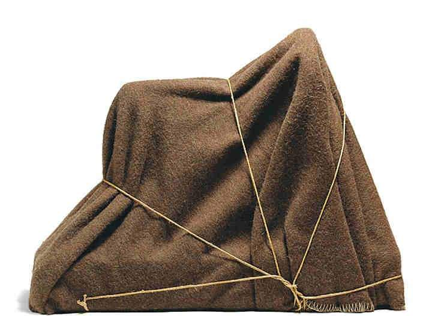
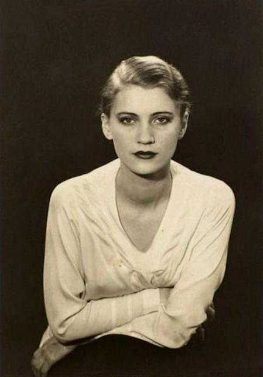
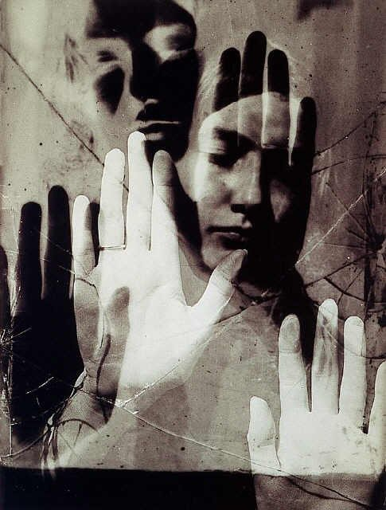

El enigma de Isidore Ducasse
1920

Lee Miller
1930

Dora Maar
1936

Solarisation
1931
Nacido en Filadelfia, Estados Unidos, fue un fotógrafo y pintor estadounidense. Cursó estudios de diseño industrial y de arquitectura. Su prolífica carrera comprendió actividades pictóricas, escultóricas y fotográficas. En el ámbito de la fotografía, género al que se dedicó profesionalmente desde 1921, desarrolló técnicas nuevas, como el rayograma o la solarización, y cultivó el retrato, la fotografía de moda y la imaginería abstracta.
Después de trasladarse a París, donde se sumergió en el mundo artístico de vanguardia, Man Ray revolucionó la fotografía con sus experimentos audaces utilizando la cámara oscura y su profundo enfoque en la interacción de la luz y la sombra. Sus imágenes resultantes se caracterizan por su evocación onírica y su capacidad para desafiar la realidad convencional.
Además de la fotografía, Man Ray incursionó con éxito en la pintura, la escultura y el cine experimental, lo que lo consolidó como un creador multidisciplinario influyente en el movimiento surrealista y en la historia del arte del siglo XX. Su obra continua siendo un referente en la exploración de las posibilidades visuales y conceptuales en el arte.
1926
1922
1932
1923
1920
1930
1936
1931